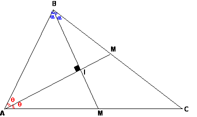
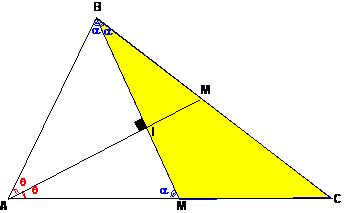
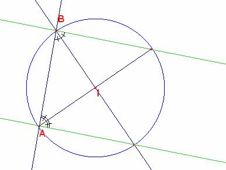

1 de septiembre al 15 de septiembre
Para el aula
Problema 269
Solución Solución de William Rodríguez Chamache. profesor de geometria
de la "Academia integral class" Trujillo-
Perú (1 de setiembre de 2005):
Supongamos el problema resuelto la gráfica seria de la
siguiente manera:

Luego en el gráfico observaremos que el triángulo BAM es
Isósceles luego los ángulos .
Luego observamos el triángulo BMA y llegaremos a la conclusión
que los segmentos BC y AC tiene que ser paralelos con lo cual afirmamos de la imposibilidad de construir un triángulo
con dos de sus bisectrices perpendiculares

Al elaborar la construcción con cabri nos quedaría de la
siguiente manera es decir el punto C
jamás podremos determinar por la geometría Euclidiana
